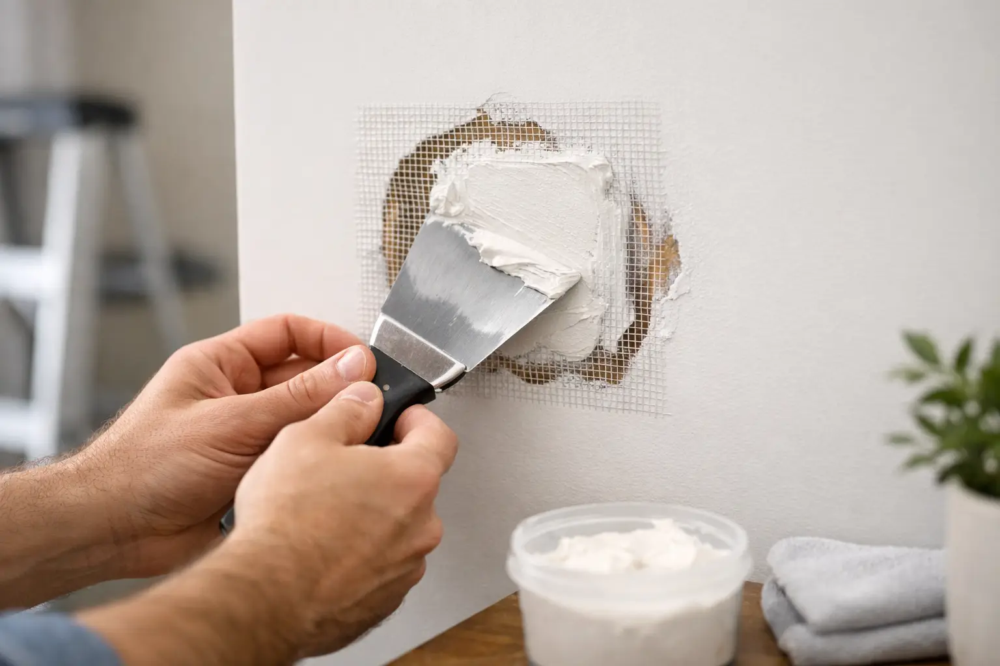

How to Patch Drywall Holes Without a Mess
By Vitalii Nestorenko · August 31, 2026 · 7 min read
A wall can look almost perfect until sunlight catches a dent, an old TV-mount hole, or a fist-sized spot where drywall paper has torn away. Knowing how to patch drywall holes helps you restore the room properly, but the best method depends on the hole size, the condition of the surrounding board, and whether you want an invisible paint finish or simply a clean rental repair.
The biggest mistake is treating every hole with the same tub of filler. Lightweight spackle is excellent for pinholes, but it will shrink or crack in a larger opening. A clean repair starts by choosing the right material, then taking the time to feather, sand, prime, and paint the area properly.
Start by sizing up the drywall damage
Before buying supplies, check whether the damage is limited to drywall or whether there could be something behind it. If the hole is near an outlet, switch, plumbing fixture, or where a TV was mounted, do not push tools deep into the wall until you are confident there are no wires or pipes in the way.
Small nail and screw holes are typically less than 6 mm across. Dents and shallow gouges may be wider but do not go through the board. Holes from door handles, removed anchors, or an accidental impact can range from 25 mm to 150 mm. Anything larger, or any damage with broken, soft, or water-stained drywall around it, usually needs a cut-out patch rather than filler alone.
Water damage deserves extra attention. Patching a stained ceiling or wall before fixing the leak only hides the problem temporarily. Make sure the source is repaired, the cavity is dry, and the drywall is still firm before starting cosmetic work.
Tools and materials for patching drywall holes
For most household repairs, gather a utility knife, sanding sponge or fine-grit sandpaper, putty knife, drywall compound, primer, matching paint, and a clean cloth. The patch material changes with the job: use spackle for tiny holes, setting-type compound or joint compound for deeper dents, and a self-adhesive mesh patch or drywall offcut for larger openings.
A wider putty knife makes a smoother final coat. For example, you may fill a small hole with a 50 mm knife, then feather the final compound layer with a 150 mm or 200 mm knife. That wider blend is what keeps the repair from showing as a raised circle after painting.
Protect floors and furniture before sanding. Even small drywall jobs create a fine dust that travels farther than most people expect. A drop cloth, vacuum with a brush attachment, and a slightly damp cloth for the final wipe-down will keep the cleanup manageable.
How to patch drywall holes from nails, screws, and anchors
Tiny nail holes are the simplest repair. Remove any loose paper or crumbling compound with the tip of a utility knife. Press a small amount of spackle into the hole with a putty knife, scraping it nearly flush with the wall. Let it dry fully, sand it lightly, and apply a second thin coat only if it has shrunk below the surface.
Screw holes and wall-anchor holes need a little more preparation. Remove the screw and pull out the anchor if possible. If a plastic anchor will not come out cleanly, tap it slightly below the drywall surface rather than tearing out a larger chunk of paper. Fill the opening in thin coats, allowing each coat to dry before adding more.
Do not pile on a thick layer and hope sanding will fix it later. Heavy filler takes longer to dry, often shrinks in the middle, and creates unnecessary dust. Two thin coats are faster to finish well than one thick, uneven coat.
Repair dents, gouges, and torn drywall paper
A dent that has not broken through the drywall can often be filled with joint compound. First, remove loose paint, torn paper, and crumbly gypsum. If the brown paper face is exposed or fuzzy, seal it with a drywall primer or sealer before applying water-based compound. Unsealed damaged paper can bubble when it gets wet, creating a frustrating repair that has to be scraped out and redone.
Apply compound across the damaged area, then pull the knife outward with firm, even pressure. The goal is not to fill only the crater. You are gradually blending the repair into the surrounding wall. Let the first coat dry, sand only high spots, then apply a wider, thinner second coat.
After the last coat is dry, run your hand across the area and look at it from the side with a work light or lamp. Your fingertips and angled light will reveal ridges that are easy to miss when looking straight at the wall.
Patch medium holes with a mesh repair patch
For holes roughly 50 mm to 150 mm wide, a self-adhesive mesh patch is often the quickest option. Trim away any loose drywall until the edges are solid and relatively flat. Centre the mesh patch over the opening and press it firmly to the wall.
Cover the patch with joint compound, pushing material through the mesh while keeping the first coat reasonably thin. Once dry, add a second, wider coat that extends beyond the patch edges. A third skim coat may be needed for a flat finish, especially on a smooth wall where every repair is visible in natural light.
Mesh patches are convenient, but they are not always the best choice. A patch can leave a slight raised area if the opening is large or the wall has a very smooth, reflective finish. For a better long-term repair on larger holes, use a fitted drywall patch with backing support.
Repair larger drywall holes with a cut-out patch
When a hole is larger than about 150 mm, cut the damaged area into a neat square or rectangle. Straight edges make it much easier to fit new drywall than trying to patch an irregular hole. Use a drywall saw carefully and check for hidden services before cutting.
Install a wood backing strip behind the opening, extending past both sides of the hole. Hold it in place and drive drywall screws through the existing wall into the strip. Then cut a new piece of drywall to fit the opening and screw it to the backing.
Tape the seams with paper tape or mesh tape and apply joint compound over the joints. Paper tape generally produces a flatter, stronger seam when installed correctly, while mesh tape is easier for many DIY repairs but works best with setting-type compound. Build the repair with two or three progressively wider coats, drying and lightly sanding between coats.
If the wall has texture, the final step is matching that texture before painting. This is where a structurally sound repair can still look obvious. Orange peel, knockdown, and stipple finishes need a matching technique and a careful test area first.
Sand, prime, and paint for an invisible finish
Sand lightly with fine-grit paper, usually around 180 to 220 grit. The purpose is to remove knife lines and high spots, not grind down the entire repair. Over-sanding can expose the mesh, damage the drywall paper, or create a hollow-looking patch.
Vacuum the dust, wipe the wall with a barely damp cloth, and let it dry. Prime every patched area before painting. Drywall compound absorbs paint differently than an existing painted wall, so skipping primer can leave a dull, flashing spot even after two paint coats.
For the closest colour match, use leftover paint from the room whenever possible. If you do not have it, take a small sample or the paint information to a paint store. Even a correctly matched colour can look different if the existing wall has faded, so painting from corner to corner may be the better choice on a highly visible wall.
When it makes sense to call for drywall repair help
DIY patching is practical for small holes when you have time for drying, sanding, and paint touch-ups. It is less appealing when the repair is near electrical work, involves water damage, includes multiple holes from a removed mount, or needs to match a textured or freshly painted feature wall.
A professional repair can also save time for landlords preparing a unit between tenants or busy homeowners trying to finish several small jobs at once. Nestor’s Home Help provides practical drywall repair and paint touch-ups in Calgary, Airdrie, Okotoks, and Cochrane, with careful cleanup so a small wall repair does not turn into a bigger disruption.
Take your time on the finishing coats. The patch itself is usually straightforward; patience with feathering, primer, and paint is what makes the wall look like nothing ever happened.
Vitalii Nestorenko is the owner of Nestor's Home Help, a licensed and insured handyman business in Calgary. He holds a Master's degree in mechanical engineering and does every job himself.